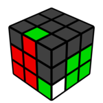
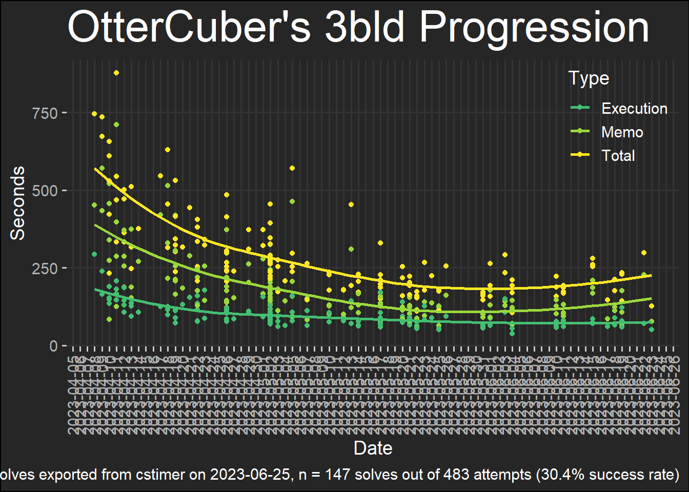

Speedcubing
2023-06-25
Solves
Total Solves: 15435
Best Single: 12.44
Best Ao5: 16.85
Best Ao12: 17.88
Best Ao100: 20.12
Days since first solve: 505 days (2021-07-20 to 2022-12-07)
Days cubing: 304 days

Top 5 Single
| Date | Seconds | Cube | Method | Scramble |
|---|---|---|---|---|
| 2022-09-13 | 12.44 | GAN 11 M Pro (Ang+L) | CFOP | L2 D L2 F2 D2 B2 D L2 U’ F2 U’ B R2 F’ L’ R2 B’ R’ B’ L2 |
| 2022-10-31 | 13.06 | GAN 11 M Pro (Ang+L) | CFOP | L’ F D2 B L2 U’ L B U’ R2 U2 L2 U’ F2 U F2 U2 L2 D2 R’ |
| 2022-10-31 | 13.09 | GAN 11 M Pro (Ang+L) | CFOP | R F2 U2 L2 D2 R’ U2 L D2 L’ F2 D’ R’ U’ B’ L F L’ F’ L2 R’ |
| 2022-01-16 | 13.09 | GAN 11 M Duo (W3+M) | CFOP | R’ F L2 U2 R2 F U2 F L2 B2 D2 B’ D’ R2 B’ L’ R2 D F’ D’ |
| 2022-09-12 | 13.10 | GAN 11 M Pro (Ang+L) | CFOP | U2 L2 U L2 B2 R2 U R2 D L2 F’ R F’ D L’ U R’ D2 L |
Top 5 Ao5
| Date | Ao5 | 1 | 2 | 3 | 4 | 5 |
|---|---|---|---|---|---|---|
| 2022-10-09 | 16.85 | 14.24 | 17.23 | 16.05 | 17.28 | 19.66 |
| 2022-10-09 | 16.85 | 24.86 | 14.24 | 17.23 | 16.05 | 17.28 |
| 2022-10-09 | 17.04 | 15.46 | 19.29 | 17.58 | 16.52 | 17.03 |
| 2022-10-15 | 17.11 | 17.60 | 21.00 | 15.51 | 16.04 | 17.69 |
| 2022-11-12 | 17.23 | 16.48 | 18.32 | 21.58 | 16.16 | 16.89 |
Top 5 Ao12
| Date | Ao12 | 1 | 2 | 3 | 4 | 5 | 6 | 7 | 8 | 9 | 10 | 11 | 12 |
|---|---|---|---|---|---|---|---|---|---|---|---|---|---|
| 2022-05-27 | 17.88 | 15.25 | 17.08 | 17.72 | 18.21 | 18.31 | 18.06 | 18.76 | 18.16 | 15.16 | 22.11 | 24.01 | 14.24 |
| 2022-05-27 | 18.00 | 18.04 | 24.66 | 20.37 | 15.25 | 17.08 | 17.72 | 18.21 | 18.31 | 18.06 | 18.76 | 18.16 | 15.16 |
| 2022-09-21 | 18.24 | 20.23 | 16.41 | 15.41 | 20.43 | 19.32 | 17.56 | 17.77 | 21.04 | 20.64 | 17.18 | 15.49 | 17.32 |
| 2022-09-21 | 18.32 | 16.41 | 15.41 | 20.43 | 19.32 | 17.56 | 17.77 | 21.04 | 20.64 | 17.18 | 15.49 | 17.32 | 21.08 |
| 2022-05-27 | 18.40 | 20.37 | 15.25 | 17.08 | 17.72 | 18.21 | 18.31 | 18.06 | 18.76 | 18.16 | 15.16 | 22.11 | 24.01 |
Cube Settings
| Cube | CubeLongName | Lubrication Date | Settings |
|---|---|---|---|
| MY | MoYu RS3 M 2020 (None) | Out-of-the-box cube had no lubricants | |
| MY2 | MoYu RS3 M 2020 (W3+M+Mag) | Speed Lube Weight 3 on springs, washers, one corner piece, and one edge piece; 6 drops of Martian; spring compression setting 3; 24 extra magnets from SCS; removed white logo sticker; tensioned by 45 degree corner cutting with corner and edge piece not separating | |
| MY3 | MoYu RS3 M 2020 (W3+M) | 2021-08-25 | Speed Lube Weight 3 on springs, washers, one corner piece, and one edge piece; 6 drops of Martian; spring compression setting 3; has sticker; tensioned by 45 degree corner cutting with corner and edge piece not separating; missing one washer |
| DY | DaYan TengYun M (Factory) | 2021-07-23 | Factory setting/unknown lubrication (purchase date is 2021-07-23) |
| DY2 | DaYan TengYun M (W5+M) | 2021-08-28 | Speed Lube Weight 5 on springs, one corner piece, and one edge piece; 3 drops of Martian; later added additional W5 on pieces to slow the cube; tensioned by 45 degree corner cutting with corner and edge piece not separating |
| G11 | GAN 11 M Duo (W3+M) | 2022-02-14 | Speed Lube Weight 3 on one corner piece and one edge piece; 3 drops (ish) of silk and 3 drops of lunar; two clicks on tension (use the tool to rotate counter-clockwise until hearing a click (highest setting), then turn THREE clicks for setting 2); setting 4 for SPRING COMPRESSION dark blue piece travel setting (push down on the blue piece then turn using finger until it is lined up with "4") |
| G12 | GAN 12 MagLev (W5+G+L) | Speed Lube Weight 5 on yellow corner piece and yellow edge piece; 3 drops of Galaxy; 3 drops of Lunar; blue center travel 2 turns after click; 3 turns after click for springs or tension | |
| W21 | WRM 2021 Lite | ||
| AI | MoYu WeiLong AI | ||
| G | GAN 11 M Pro (Ang+L) | 2022-04-14 | 3 clicks for tension; setting 4 for spring compression (dark blue); Angstrom Gravitas (clear; slow) on two corner pieces and Angstrom Dignitas (white; fast) on one edge piece; 6 drops of Lunar |
| G13 | GAN 13 M MagLev | OOTB |
F2L Algorithms
| No | Cube | Algs |
|---|---|---|
| 1 |

|
FR: U R U’ R’ FL: F’ r U r’ BR: U f R’ f’ BL: U L U’ L’ |
| 2 |

|
FR: F R’ F’ R FL: U’ L’ U L BR: U’ R’ U R BL: U’ f’ L f |
| 3 |
FR: F’ U’ F FL: L’ U’ L BR: R’ U’ R BL: f’ L’ f |
|
| 4 |

|
FR: R U R’ FL: F U F’ BR: f R F’ BL: L U L’ |
| 5 |
FR: U’ R U R’ U2 R U’ R’ FL: d’ {BL} BR: y {FR} BL: U’ L U L’ U2 L U’ L’ |
|
| 6 |
FR: U’ r U’ R’ U R U r’ (#) FL: U L’ U’ L U2’ L’ U L BR: U R’ U’ R U2 R’ U R BL: y {BR} |
|
| 7 |
FR: U’ R U2’ R’ U2 R U’ R’ FL: F U R U2’ R’ U F’ (#) BR: r U2 R2 U’ R2 U’ r’ (#) BL: U’ L U2 L’ U2 L U’ L’ |
|
| 8 |
FR: r’ U2 R2 U R2’ U r (#) FL: U L’ U2 L U2’ L’ U L BR: U R’ U2’ R U2 R’ U R BL: y’ {FL} |
|
| 9 |
FR: U’ R U’ R’ U F’ U’ F (#) FL: U2’ L’ U L U L’ U’ L (#) BR: U R’ U’ R U’ R’ U’ R (#) BL: y {BR} |
|
| 10 |

|
FR: U’ R U R’ U R U R’ (#) FL: F U’ R U R’ U2’ F’ (#) BR: y’ {BL} BL: U’ L U L’ U L U L’ |
| 11 |

|
FR: F’ U L’ U2 L U2’ F FL: L U2 L2’ U’ L2 U’ L’ BR: R U2’ R2’ U’ R2 U’ R’ BL: y {BR} |
| 12 |

|
FR: R U’ R’ U R U’ R’ U2 (R U’ R’) FL: F U’ R U2’ R’ U2 F’ BR: U (R’ U2 R) U’ y (R U R’) BL: L’ U2 L2 U (L2’ U L) |
| 13 |

|
FR: (R U’ R’) U (R’ F R F’) (R U’ R’) FL: U L’ U L U’ L’ U’ L BR: U R’ U R U’ (R’ U’ R) BL: y {BR} |
| 14 |

|
FR: U’ R U’ R’ U R U R’ FL: y’ {FR} BR: y {FR} BL: U’ L U’ L’ U (L U L’) |
| 15 |

|
FR: (R U R’ U2) (R U’ R’ U) (R U’ R’) FL: F U2 R U R’ U F’ BR: R’ U R U2’ f R f’ BL: L U2 L’ U L U L’ U (L U’ L’) (#) |
| 16 |
FR: R U’ R’ U2 F’ U’ F FL: F U’ R U’ R’ U2 F’ BR: R’ U’ R U2 R’ U R U’ R’ U R BL: y {BR} |
|
| 17 |

|
FR: R U2 R’ U’ R U R’ FL: y {BL} BR: y’ {BL} BL: L U2 L’ U’ L U L’ |
| 18 |
FR: R’ F R F’ R U’ R’ U R U’ R’ FL: L’ U2 L U L’ U’ L BR: R’ U2’ R U R’ U’ R BL: y’ {FL} |
|
| 19 |
FR: U R U2 R’ U (R U’ R’) FL: y’ {FR} BR: y {FR} BL: U L U2 L’ U (L U’ L’) |
|
| 20 |

|
FR: U’ R U’ R2’ F R F’ R U’ R’ FL: U’ L’ U2 L U’ (L’ U L) BR: U’ R’ U2 R U’ (R’ U R) BL: y {BR} |
| 21 |

|
FR: R U’ R’ U2 R U R’ FL: l’ U l U2 l’ U’ l (#) BR: r’ U r U2’ r’ U’ r (#) BL: U2 L U L’ U L U’ L’ |
| 22 |
FR: r U’ r’ U2 r U r’ FL: L’ U L U2 (L’ U’ L) (#) BR: U2 R’ U’ R U’ (R’ U R) BL: l U’ l’ U2 l U l’ (#) |
|
| 23 |

|
FR: U R U’ R’ U’ R U’ R’ U R U’ R’ FL: F’ U’ L’ U L F L’ U L (#) BR: y {FR} BL: L U L’ U2 L U L’ U’ L U L’ (#) |
| 24 |

|
FR: F U R U’ R’ F’ R U’ R’ FL: U’ (L’ U L) U (L’ U L) U’ (L’ U L) BR: R’ U’ R U2 R’ U’ R U R’ U’ R (#) BL: y {BR} |
| 25 |

|
FR: U’ (R’ F R F’) (R U R’) FL: U’ (L’ U L) y U (L U’ L) BR: y {FR} BL: y’ {FL} |
| 26 |
FR: U R U’ R’ F R’ F’ R FL: U (L F’ L’ F) (L’ U’ L); (U2) R’ D’ F2 D R2 U’ R’ BR: R U’ S R2 S’ R2 U R’ (#) BL: y {BR} |
|
| 27 |

|
FR: R U’ R’ U (R U’ R’) FL: y’ {FR} BR: R’ U2 (R’ F R F’) R (#) BL: L U’ L’ U (L U’ L’) |
| 28 |  |
FR: (R U R’ U’) (F R’ F’ R) (#) FL: L’ U L U’ (L’ U L) BR: R’ U R U’ (R’ U R) BL: L U2 L F’ L’ F L’ (#) |
| 29 |
FR: R’ F R F’ U (R U’ R’) FL: L’ U’ L U (L’ U’ L) BR: R’ U’ R U (R’ U’ R) BL: y {BR} |
|
| 30 |
FR: (R U R’) U’ (R U R’) FL: y’ {FR} BR: y {FR} BL: L U L’ U’ (L U L’) |
|
| 31 |

|
FR: U’ R’ F R F’ (R U’ R’) FL: U L F’ L’ F (L’ U L) BR: R’ U R’ F R F’ R BL: L U’ L F’ L’ F L’ |
| 32 |

|
FR: (U R U’ R’) (U R U’ R’) (U R U’ R’) FL: (U’ L’ U L) (U’ L’ U L) (U’ L’ U L) BR: (U’ R’ U R) (U’ R’ U R) (U’ R’ U R) BL: (L U L’ U’) (L U L’ U’) (L U L’ U’) |
| 33 |
FR: U’ R U’ R’ U2 (R U’ R’) FL: R’ D R U’ R’ D’ R (#) BR: U’ R’ U’ R U2 (R’ U’ R) (#) BL: U’ L U’ L’ U2 (L U’ L’) (#) |
|
| 34 |
FR: U R’ D’ R U’ R’ D R FL: U L’ U L U2’ (L’ U L) (#) BR: U R’ U R U2’ (R’ U R) (#) BL: U L U L’ U2 (L U L’) (#) |
|
| 35 |
FR: U2 R U R’ F R’ F’ R FL: U2 L F’ L’ F U2 (L’ U’ L) (#) BR: y {FR} BL: y’ {FL} |
|
| 36 |

|
FR: U F’ U’ F U’ R U R’ FL: U2 L’ U L U y’ (R U R’) (#) BR: y {FR} BL: y’ {FL} |
| 37 |

|
FR: (R’ F R F’) (R U’ R’) U (R U’ R’) U2 (R U’ R’) FL: (L F’ L’ F) L U2 L2’ U’ L2 U’ L’ (#) BR: y {FR} BL: y’ {FL} |
| 38 |

|
FR: R U’ R’ U’ R U R’ U2 R U’ R’ (#) FL: (L’ U L) U’ L’ U2 L U’ L’ U L (#) BR: (R’ U’ R U2) (R’ U R U’ R’ U’ R) (#) BL: (L U L’ U’) L U2 L’ U’ L U L’ (#) |
| 39 |

|
FR: R U’ R’ U R U2 R’ U R U’ R’ (#) FL: L’ U L U L’ U’ L U2’ L’ U L (#) BR: (R’ U’ R U) R’ U2’ R U R’ U’ R (#) BL: (L U L’ U2’) L U’ L’ U L U L’ (#) |
| 40 |
FR: r U’ r’ U2 r U r’ R U R’ (#) FL: L’ U L l’ U l U2’ l’ U’ l (#) BR: R’ U R r’ U r U2 r’ U’ r (#) BL: l U’ l’ U2 l U l’ L U L’ (#) |
|
| 41 |
FR: (R U’ R’) r U’ r’ U2 r U r’ (#) FL: l’ U l U2 l’ U’ l L’ U’ L (#) BR: r’ U r U2 r’ U’ r R’ U’ R (#) BL: L U’ L’ l U’ l’ U2’ l U l’ (#) |
PLL Algorithms
| Name | Cube | Algorithm |
|---|---|---|
| Aa |

|
(R’ D’ R) U2’ (R’ D R) U’ (R’ D’ R) U’ (R’ D R) |
| Ab |

|
(R’ D’ R) U (R’ D R) U (R’ D’ R) U2 (R’ D R) |
| E |

|
x’ (R U’ R’ D) (R U R’ D’) (R U R’ D) (R U’ R’ D’) x |
| Ua |

|
M2’ U M U2’ M’ U M2’ |
| Ub | R2 U (R U R’ U’) R’ U’ (R’ U R’) | |
| Z | M’ U’ M2’ U’ M2’ U’ M’ U2’ M2’ | |
| H | (M2’ U M2’) U2 (M2’ U M2’) | |
| F | R’ F R f’ R’ F R2 U R’ U’ R’ F’ R2 U R’ S | |
| Ja |

|
x R2 F R F’ R U2 r’ U r U2 x’ |
| Jb |

|
(R U R’ F’) (R U R’ U’) R’ F R2 U’ R’ |
| T |

|
(R U R’ U’) (R’ F R2 U’) R’ U’ (R U R’ F’) |
| Ra | (R U’ R’ U’) (R U R’ U) (R’ D’ R U’ R’ D) (R2 U R’) | |
| Rb |

|
R’ U2 R’ D’ R U’ R’ D R U R U’ R’ U’ R |
| V |

|
(R’ U R’ U’) y (R’ F’ R2 U’) (R’ U R’ F) R F |
| Y | F (R U’ R’ U’) (R U R’ F’) (R U R’ U’) (R’ F R F’) | |
| Na |

|
(R U R’ U) (R U R’ F’) (R U R’ U’) (R’ F R2 U’) R’ U2 (R U’ R’) |
| Nb |

|
r’ D’ F (r U’ r’) F’ D (r2 U r’ U’) (r’ F r F’) |
| Ga |

|
R2 U (R’ U R’ U’) (R U’ R2) D U’ (R’ U R D’) |
| Gb |

|
R’ U’ R U D’ R2 U R’ U R U’ R U’ R2’ D |
| Gc |

|
(R2’ u’ R U’) (R U R’ u) (R2 f R’ f’) |
| Gd | R U R’ U’ D R2 U’ R U’ R’ U R’ U R2 D’ |
OLL Algorithms
| No | Name | Cube | Alg |
|---|---|---|---|
| 1 | H / No edges oriented |

|
R U2’ (R2’ F R F’) U2’ (R’ F R F’) |
| 2 | Pi / No edges oriented |

|
F (R U R’ U’) F’ f (R U R’ U’) f’ |
| 3 | S/AS / No edges oriented |

|
R’ F2 R2 U2 R’ F R U2 R2 F2 R |
| 4 | S/AS / No edges oriented |

|
R’ F2 R2 U2 R’ F’ R U2 R2 F2 R |
| 5 | S/AS / Squares | l’ U2 L U L’ U l | |
| 6 | S/AS / Squares | r U2 R’ U’ R U’ r’ | |
| 7 | S/AS / Lightning | r U R’ U R U2 r’ | |
| 8 | S/AS / Lightning | l’ U’ L U’ L’ U2 l | |
| 9 | S/AS / Fish | R U2’ R’ U’ S’ R U’ R’ S | |
| 10 | S/AS / Fish |

|
R U R’ U R’ F R F’ R U2 R’ |
| 11 | S/AS / Lightning | S R U R’ U R U2 R’ U2 S’ | |
| 12 | S/AS / Lightning |

|
S R’ U’ R U’ R’ U2 R U2 S’ |
| 13 | S/AS / Knight |

|
F U R U2 R’ U’ R U R’ F’ |
| 14 | S/AS / Knight |

|
R’ F R U R’ F’ R F U’ F’ |
| 15 | S/AS / Knight | l’ U’ l L’ U’ L U l’ U l | |
| 16 | S/AS / Knight |

|
r U r’ R U R’ U’ r U’ r’ |
| 17 | Dot Case | F R’ F’ R U S’ R U’ R’ S | |
| 18 | Dot Case |

|
F S’ R U’ R’ S R U2’ R’ U’ F’ |
| 19 | Dot Case |

|
S’ R U R’ S U’ R’ F R F’ |
| 20 | Dot Case | S’ R U R’ S U’ M’ U R U’ r’ | |
| 21 | H | R U2 R’ U’ R U R’ U’ R U’ R’ | |
| 22 | Pi | R U2’ R2’ U’ R2 U’ R2’ U2’ R | |
| 23 | U | R2 D R’ U2 R D’ R’ U2 R’ | |
| 24 | T |

|
r U R’ U’ r’ F R F’ |
| 25 | L |

|
F R’ F’ r U R U’ r’ |
| 26 | Antisune | R U2 R’ U’ R U’ R’ | |
| 27 | Sune | R U R’ U R U2’ R’ | |
| 28 | O / All Corners Oriented |

|
S’ R U R’ S R U’ R’ |
| 29 | T / Awkward |

|
S’ R U R’ U’ R’ F R F’ U S |
| 30 | T / Awkward | r’ D’ r U’ r’ D r2 U’ r’ U r U r’ | |
| 31 | P | R’ U’ F U R U’ R’ F’ R | |
| 32 | P |

|
S R U R’ U’ R’ F R f’ |
| 33 | T | R U R’ U’ R’ F R F’ | |
| 34 | C / T |

|
f R f’ U’ r’ U’ R U M’ |
| 35 | L / Fish | R U2’ R2’ F R F’ R U2’ R’ | |
| 36 | L / W |

|
R’ F’ U’ F2 U R U’ R’ F’ R |
| 37 | L / Fish | F R’ F’ R U R U’ R’ | |
| 38 | L / W | R U R’ U R U’ R’ U’ R’ F R F’ | |
| 39 | L / Lightning | f’ r U r’ U’ r’ F r S | |
| 40 | L / Lightning |

|
R’ F R U R’ U’ F’ U R |
| 41 | U / Awkward | (R U R’ U R U2’ R’) F (R U R’ U’) F’ | |
| 42 | U / Awkward | F S’ R U R’ U’ F’ U S | |
| 43 | P | R’ U’ F’ U F R | |
| 44 | P |

|
f R U R’ U’ f’ |
| 44b | P |

|
F U R U’ R’ F’ |
| 45 | T | F R U R’ U’ F’ | |
| 46 | C / U | R’ U’ R’ F R F’ U R | |
| 47 | L | F R’ F’ R U2 R U’ R’ U R U2 R’ | |
| 48 | L |

|
F R U R’ U’ R U R’ U’ F’ |
| 48b | L |

|
f U R U’ R’ U R U’ R’ f’ |
| 49 | L | R B’ R2’ F R2 B R2’ F’ R | |
| 50 | L / Pi | R’ F R2 B’ R2 F’ R2 B R’ | |
| 51 | Line / Pi | F U R U’ R’ U R U’ R’ F’ | |
| 52 | Line / Pi | R’ F’ U’ F U’ R U R’ U R | |
| 53 | L / H | l’ U’ L U’ L’ U L U’ L’ U2 l | |
| 54 | L / H | r U R’ U R U’ R’ U R U2 r’ | |
| 55 | Line / H |

|
R’ F U R U’ R2’ F’ R2 U R’ U’ R |
| 56 | Line / H | r U r’ U R U’ R’ U R U’ M’ U’ r’ | |
| 57 | O / All Corners Oriented | R U R’ S’ R U’ R’ S | |
| 57b | O / All Corners Oriented | R U R’ U’ M’ U R U’ r’ |
2-Side PLL Recognition
| Precedence | Feature | Pattern | PLL |
|---|---|---|---|
| 1 | 3-Bar | 3-Bar + HL (adj) | Ua |
| 1 | 3-Bar | 3-Bar + HL (opp) | Ub |
| 1 | 3-Bar | HL (adj) + 3-Bar | Ub |
| 1 | 3-Bar | HL (opp) + 3-Bar | Ua |
| 1 | 3-Bar | Bar + 2-bar (left) | Ja |
| 1 | 3-Bar | Bar + 2-bar (right) | Jb |
| 1 | 3-Bar | 2-bar (left) + 3-Bar | Ja |
| 1 | 3-Bar | 2-bar (right) + 3-Bar | Jb |
| 1 | 3-Bar | 4 colors with 3-Bar | F |
| 2 | Double HL | HL + HL (opp) | Ua |
| 2 | Double HL | HL (opp) + HL | Ub |
| 2 | Double HL | HL (adj) + HL (adj/odd) | Ua |
| 2 | Double HL | HL (adj/odd) + HL (adj) | Ub |
| 2 | Double HL | 2-color 6-checker | Z |
| 2 | Double HL | Adj Edges & 4 colors | Z |
| 2 | Double HL | HL (opp) + HL (opp) | H |
| 2 | HL + 2-Bar | 2-bar (inside) + HL (opp) | T |
| 2 | HL + 2-Bar | HL (adj) + 2-Bar (inside) | Ra |
| 2 | HL + 2-Bar | 2-Bar (inside) + HL (adj) | Rb |
| 2 | HL + 2-Bar | 2-color checker + 2-bar (outer right) | Aa |
| 2 | HL + 2-Bar | 2-bar (outer left) + 2-color checker | Ab |
| 2 | HL + 2-Bar | Outer 2-bar (right) + 4 color (HL + 2 different colors) | Ga |
| 2 | HL + 2-Bar | Outer 2-bar (left) + 4 color | Gc |
| 2 | Lone HL | 5-checker (right) | Ra |
| 2 | Lone HL | 5-checker (left) | Rb |
| 2 | Lone HL | HL (adj) + No checker (right) | Aa |
| 2 | Lone HL | No checker (left) + HL (adj) | Ab |
| 2 | Lone HL | Lone lights (4 checker right) | Ga |
| 2 | Lone HL | Lone lights (4 checker left) | Gc |
| 2 | Lone HL | 6-Checker with Odd Color (left) | Gb |
| 2 | Lone HL | 6-Checker with Odd Color (right) | Gd |
| 2 | Lone HL | Lone HL (opp) + 4 colors | Gb |
| 2 | Lone HL | 4 colors + Lone HL (opp) | Gd |
| 3 | Double 2-Bar | Two 2-bar (left) + Bookend | Ja |
| 3 | Double 2-Bar | Two 2-bar (right) + Bookend | Jb |
| 3 | Double 2-Bar | Inside 2-bars + Bookends (adj colors on left) | Aa |
| 3 | Double 2-Bar | Inside 2-bars + Bookends (adj colors on right) | Ab |
| 3 | Double 2-Bar | Outside 2-bars & no bookend | Na |
| 3 | Double 2-Bar | Inside 2-bars & no bookend | Nb |
| 3 | Double 2-Bar | Inside 2-Bars + No Bookend | V |
| 3 | Inside 2-Bar | Inside 2-Bar + No Bookend | Y |
| 3 | Inside 2-Bar | Inside bar (left) (bookends adj) | Ga |
| 3 | Inside 2-Bar | Inside bar (right) (bookends adj) | Gc |
| 3 | Inside 2-Bar | Bookends + Opp Inside 2-Bar (left) | Gb |
| 3 | Inside 2-Bar | Bookends + Opp Inside 2-Bar (right) | Gd |
| 3 | Outside 2-Bar | 2-bar (adj) + 4 colors | T |
| 3 | Outside 2-Bar | 2-bar (outside) + 2 adj colors | Ra |
| 3 | Outside 2-Bar | 2 adj colors + 2 bar (outside) | Rb |
| 3 | Outside 2-Bar | 2-bar (outer left) + opp color/4 colors | Aa |
| 3 | Outside 2-Bar | 4 colors/opp color + 2-bar (outer right) | Ab |
| 3 | Outside 2-Bar | Outside 2-bar + No Bookend | V |
| 3 | Outside 2-Bar | Double Opp + Outside 2-Bar | Gb |
| 3 | Outside 2-Bar | Outside 2-Bar + Double Opp | Gd |
| 4 | Bookends No Bar | Bookend with enclosed checkers | F |
| 4 | Bookends No Bar | 2 adj colors (left) + bookend | Ra |
| 4 | Bookends No Bar | 2 adj colors (right) + bookend | Rb |
| 4 | Bookends No Bar | Bookends with double opp (almost checkers disrupted on left) | Ga |
| 4 | Bookends No Bar | Bookends with double opp (almost checkers disrupted on right) | Gc |
| 4 | No Bookends | 3-checker without bookends or lights | E |
| 4 | No Bookends | Inner 4-checker | V |
2-Side PLL AUF Recognition
“All PLLs preserve something. You just gotta learn what they preserve.” - Mati, 2023
| No | PLL | Cube | Recognition |
|---|---|---|---|
| 1 | Aa |
Intuition: Aa-perm is a Corner Permutation of the Last Layer (CPLL) that only permutes or cycles three corners of the last layer. This means that executing the algorithm will leave a 2x2 block untouched. PreAUF: U2, because my algorithm is executed with the 2x2 block on the front left PostAUF: U, because the LUF red sticker will be moved to the back after the U2 pre-AUF and an additional U move will move it into the correct position |
|
| 2 | Aa |
PreAUF: U’, because if a 2x1 block is not visible before pre-AUF, the 2x2 block is in the back and will have to be moved to the front left position PostAUF: U, to undo the pre-AUF U’ move, because the edges are already solved |
|
| 3 | Ab |
Intuition: Ab-perm is a Corner Permutation of the Last Layer (CPLL) that only permutes or cycles three corners of the last layer. This means that executing the algorithm will leave a 2x2 block untouched. PreAUF: U2, moving the 2x2 block to the front left position PostAUF: U’, because the LUF orange sticker moves to the back after the pre-AUF of U2 and needs a U’ move to return to its correct position. Alternatively, one can track the RUF blue sticker as well, because Ab-perm will not alter any edges; they will remain fixed |
|
| 4 | E |
Intuition: E-perm is a CPLL with four corner swaps. Since only the corners are swapped, E-perm does not alter the edge pieces. Therefore, one might think that the only pre-AUF concern would be to move the edges into their proper position, then execute E-perm. However, sometimes this might result in the wrong corners being swapped. Even if the edges are already in the right position, a pre-AUF may be necessary to swap the correct corners. PreAUF: None, because the orange-blue-orange 3-checker pattern is on the right side PostAUF: U2, because the edge pieces are not altered by E-perm, therefore U2 will move the RUF and LUF edges to their proper locations |
|
| 5 | E |
PreAUF: U or U’, because the blue-orange-blue 3-checker pattern is on the left side PostAUF: U’ or U, to undo the pre-AUF move |
|
| 6 | Ua |
Intuition: U-perms are EPLLs that cycle three edges. The 3-bar that is untouched by the algorithm will be adjacent to the odd edge that is opposite the color of its associated headlights and opposite the odd edge that is adjacent to headlights. PreAUF: None, because the odd edge is opposite, therefore the 3-bar is already in the back PostAUF: U2, because the corners, which are fixed, are U2 away from their correct positions |
|
| 7 | Ua |
PreAUF: U, because the odd edge is adjacent, therefore the 3-bar is opposite and needs to move to the back with a U move PostAUF: U2, because the corners are now U2 away from their correct position |
|
| 8 | Ub |

|
PreAUF: None, because the odd edge is opposite, therefore the 3-bar is already in the back PostAUF: U’, because the corners are fixed |
| 9 | Ub |
PreAUF: U, because the odd edge is adjacent, therefore the 3-bar is opposite and needs to move to the back with a U move PostAUF: None, because the pre-AUF move fixed the corners as well |
|
| 10 | Z |
Intuition: Z-perm is an EPLL that cycles edges diagonally. My algorithm requires a checker pattern in the front and right layers. AUF is complicated by the fact that the algorithm also shifts the upper layer by U’. PreAUF: U or U’, to obtain a checkers pattern PostAUF: U or U’. If the corners are fixed during pre-AUF with U, but shifted U’ during the alg, a post-AUF of U will be needed to undo the alg’s U’ shift. If the corners are shifted to being U2 away from being solved via a U’ pre-AUF move, and shifted U’ during the alg, then another U’ will be needed to fix the corners. |
|
| 11 | H |
PreAUF: None PostAUF: None |
|
| 12 | F |
Intuition: F-perm permutes both edges and corners. For my alg, to determine pre-AUF, note that the 3-bar is opposite the opposite HL and needs to be oriented on the L face. To determine post-AUF, note that both the 3-bar (which is opposite opposite HL) and the RUS edge are fixed. Alternatively, the bookends can also be used, as they become the F face color after executing F-perm. PreAUF: None, because the 3-bar is adjacent to the opposite-colored pair PostAUF: U’, because the bookend colors will become the F face after executing F-perm |
|
| 13 | F |
PreAUF: U’, because the 3-bar is opposite the opposite-colored HL PostAUF: None, because pre-AUF moves the red edge to RUS, which is not altered by F-perm |
|
| 14 | Ja |

|
Intuition: The 3-bar is opposite the opposite colored blocks (O-block) or adjacent to the adjacent colored blocks (A-block). For my alg, the goal of pre-AUF is to move the 3-bar to the L face. If the 3-bar is present before pre-AUF, its color can be used to deduce the post-AUF (as it remains fixed). If the 3-bar is hidden from view, and there is an O-block in the F face, then the FUR sticker can be used to determine the post-AUF (because after a U’ pre-AUF, its color will be the same as the 2-bar in the F face). If the 3-bar is hidden, and there is an A-block in the F face, then the 2-bar in the F face (or the LUF sticker) can be used to determine the post-AUF, as the 2-bar remains fixed. PreAUF: None, because the O-block (orange-red) is on the R face, therefore the 3-bar is already on the L face PostAUF: U’, because the LUF red sticker (or the red 2-bar) is fixed and needs U’ to return to its correct location |
| 15 | Ja |
PreAUF: U’, because there is an O-block (orange-red) in the F layer PostAUF: U’, because the FUR sticker is U’ away from its correct location |
|
| 16 | Ja |
PreAUF: U2, to move the 3-bar to the L face PostAUF: U’, because the 3-bar is U’ away from the F face (after pre-AUF) |
|
| 17 | Jb |
Intuition: My Jb alg is executed with the 3-bar on the left, so the goal of pre-AUF will be to move the 3-bar to the left. When it is hidden from view, it is opposite the O-block (or opposite colored blocks). If the O-block is on the F face, then the RUF sticker will become the 2-bar on the F face and can be used for post-AUF. If the O-block is on the R face, then the 2-block on the F face can be used for post-AUF. If the 3-bar is not hidden, then note that it will move to the back layer after Jb-perm; knowing this will therefore determine the post-AUF. PreAUF: U’, because the O-block is in the F face, therefore the 3-bar is in the back and needs to be moved to the left PostAUF: U’, because the FUR sticker is red and will become the F face after executing Jb |
|
| 18 | Jb |
PreAUF: U2, to move the 3-bar to the L face PostAUF: U, because the red 3-bar will move to the back and needs another U move to be solved |
|
| 19 | T |
Intuition: The headlights with an opposite edge is opposite the side with 3 different colors. For my alg, this headlight needs to be on the left side. Therefore, the goal of pre-AUF will be to simply move this headlight to the left face. If the HL is visible, then it can be used to determine post-AUF. Notice that both 2-bars adjacent to the HL are fixed during T-perm. Observing the colors of these 2-bars will determine the post-AUF. PreAUF: U’, because HL is opposite the 3-colored UF 1x1x3 block (blue-red-green). PostAUF: U2, because the blue 2-bar adjacent to the HL moves to the back and will remain there during T-perm. U2 is needed during post-AUF to return it to the front layer. |
|
| 20 | Rb |
Intuition: For my alg, exeuction is with the 5-checker pattern in the front face, so the goal of pre-AUF will be to locate the HL within the 5-checker pattern and move it to the F layer. One way to identify the HL when it is hidden is to locate an opposite-colored HL (e.g., blue and green), which will always be opposite a same-colored HL in PLLs with an adjacent corner swap. Alternatively, for the two cases where the HL is hidden, the HL will be on the side farthest away from the 3-checker pattern. To identify the post-AUF, the right color of the opposite-colored HL will become the F layer color after pre-AUF and Rb-perm, therefore it can be used to predict post-AUF before pre-AUF. A lazier method would be to execute pre-AUF, then note that the color between the HL on the F layer will remain fixed. PreAUF: U’, because HL is on the farthest side from the 3-checker pattern (the L face, not the B face) OR because HL is opposite the blue-orange opposite-colored HL PostAUF: U2, because the green RUB sticker will become the F layer after Rb-perm |
|
| 21 | Rb |
PreAUF: U2’, because HL is on the farthest side from the 3-checker pattern OR because it’s opposite the opposite-colored HL PostAUF: U2, because the green FUR sticker will become the F layer after Rb-perm |
|
| 22 | Rb |
PreAUF: U, to move HL to F layer PostAUF: None, because the blue RUS sticker will become the F layer after Rb-perm |
|
| 23 | V |
Intuition: My alg is executed with the 2x2 block in Ufl, which remains fixed in V-perm. The goal of pre-AUF will be to locate and move this 2x2 block to Ufl. The goal of post-AUF is to return the 2x2 block to its correct position. PreAUF: None, because the 2x2 block is already in Ufl. PostAUF: U’, because the 2x2 block in Ufl is U’ away from its correct location. |
|
| 24 | V |
PreAUF: U, because the 2x2 block needs to be moved from Ufr to Ufl. PostAUF: U, because after pre-AUF, the blue 2x1x1 block in UFl is U away from the blue L face. |
|
| 25 | V |
PreAUF: U2, to move the 2x2 block in Ubr to Ufl. PostAUF: U, because after pre-AUF, the 2x1x1 URb block will move to the L layer, which is U away from its correct location |
|
| 26 | V |
PreAUF: U’, to move the 2x2 block in Ubl to Ufl. PostAUF: U, because the blue RUB sticker will be the same color as the blue 2x1x1 block in UFl after pre-AUF |
|
| 27 | Y |
Intuition: My alg’s execution angle contains two 2-bars flanking an opposite corner. The 2-bars are fixed, so the goal of pre-AUF will be to make both of these 2-bars visible. If the 2-bars are visible, post-AUF will rely on these fixed 2-bars. If none of the 2-bars are visible, then the FUR sticker will become the 2-bar on the F layer and the RUF sticker will become the color of the 2-bar on the R layer. PreAUF: U2, to make both 2-bars visible PostAUF: U2, because both the FUR and RUF stickers are U2 away from their correct positions |
|
| 28 | Ga |

|
Intuition: For Ga-perm, the goal of pre-AUF will be to orient the HL on the L face and the 2-bar on the F face. In the angle where both the HL and the 2-bar are not visible, the opposite HL can be used to identify the HL. Post-AUF can be determined by (1) the FUL sticker next to the 2-bar, which will become the F layer color after Ga-perm; (2) the HL color, which will become the L layer after Ga-perm; (3) or, when the HL and 2-bar are both not visible, the double opposite (of the bookends) inner blocks will become the F layer OR the RUB sticker will remain fixed in the B layer after Ga-perm. PreAUF: U’, because the orange-red opposite HL is opposite the HL in the B, which needs to be moved to the L layer via U’ PostAUF: U’, because the double opposite inner blocks will become the F layer, which is U’ away from the red R face |
| 29 | Gb |
Intuition: For Gb-perm, the goal of pre-AUF will be to orient the HL on the L face and the 2-bar on the R face. To determine the post-AUF, note that the HL will be fixed after Gb-perm, and the color of the 2-bar will become the color of the F face. PreAUF: U’, to move the 2-bar to the R layer PostAUF: U2, because the green 2-bar will become the F layer and is U2 away from its correct location |
|
| 30 | Gc |
Intuition: For Gc-perm, to determine pre-AUF, orient the HL on the L face and the 2-bar on the B face. The execution angle hides both the HL and the 2-bar. To determine post-AUF, note that after Gc-perm, the 2-bar will remain fixed and the edges without HL or 2-bar will rotate U. PreAUF: U’, to move the 2-bar to the B face PostAUF: U’, because the red edge will move to R during pre-AUF, then F during Gc-perm, then U’ will return it back to R |
|
| 31 | Gd |
Intuition: For my Gd-perm, pre-AUF consists of orienting the HL on the L face and the 2-bar on the R face. To determine post-AUF, note that the HL will remain fixed, while the 2-bar will rotate U’ after Gd-perm. PreAUF: U’, to move the 2-bar to the R face PostAUF: U’, because the orange 2-bar will move to B after Gd-perm, which is U’ away from the orange L face |
Beginner Methods
LBL
- Bottom layer (white) cross
- Bottom layer corners: R U R’ U’
- Middle layer edge pieces: U (R U R’ U’) y (L’ U’ L U) or U’ (L’ U’ L U) y’ (R U R’ U’)
- Top layer (yellow) cross: F (R U R’ U’) F’ or f (R U R’ U’) f’
- Top layer edges: R U R’ U R U’ U’ R’
- Top layer corners: (U R U’ L’) (U R’ U’ L)
- Orient top layer corners: x2 R U R’ U’
Step 2: To save an edge on the right side, use U (R U R’ U’) U’ (R U R’ U’). To save an edge on the left side, use U’ (L’ U’ L U) U (L’ U’ L U)
Step 2: If white is on top: (R U2 R’ U’) (R U R’ U’)
MirIS
One of the most basic solutions to the Rubik’s cube is the MirIS method, which solves the entire cube using a single right-hand (RH) algorithm—U R U’ R’—and its mirrored, left-hand (LH) version—U’ L’ U L.
- Solve the white cross and three corners of the white cross using RH
- Solve each corresponding edge of the solved corners using a combination of RH and LH
- Orient the yellow edges using RH and LH
- Permute the yellow edges using RH U RH
- Solve the remaining corners using RH, rotating the cube as necessary
Corners-First Algorithms
This is a corners-first solution specifically tailored for those familiar with the CFOP method. I use NBRS for referencing pieces.1
| Goal | Cube | Solution |
|---|---|---|
| Solve white corners | Solve intuitively | |
| Orient yellow corners | If no corners are oriented, place yellow sticker in FUL position, then sune (R U R’ U R U2’ R’). Repeat if necessary. | |
| Orient yellow corners | If one corner is oriented, place yellow corner in UFL position, then sune (R U R’ U R U2’ R’). Repeat if necessary. | |
| Orient yellow corners | If two corners are oriented, place yellow sticker in FUL position, then sune (R U R’ U R U2’ R’). Repeat if necessary. | |
| Permute yellow corners | To swap adjacent corners, use T perm (R U R’ U’ R’ F R2 U’ R’ U’ R U R’ F’) | |
| Permute yellow corners | To swap opposite corners, use Y perm (F R U’ R’ U’ R U R’ F’ R U R’ U’ R’ F R F’) | |
| Solve white edges | Solve three edges intuitively, e.g., U’ M2’ U, and leave one edge unsolved (keyhole) | |
| Solve yellow edges | Solve four edges intuitively, e.g., U’ M’ U, using the unsolved keyhole for insertions | |
| Solve last white edge | If it’s a bad edge, place in DFM and use U’ M U2’ M U’ | |
| Solve last white edge | If it’s a good edge, place in DBM and use U M’ U2 M’ U | |
| Solve middle edges | To flip the UFM/UBM edges, use (M’ U’)3 (U’ M)3 U2’ | |
| Solve middle edges | To swap the UFM/UBM and DFM/DBM edges, use (M2 U2)2 | |
| Solve middle edges | To cycle three edges, use M’ U2’ M U2’ |
Example Solve
An example solve using Minh Thai’s 1982 WR scramble:
U L2 D’ B2 U’ R2 B2 F2 D’ F2 L2 R2 F R2 D L2 R2 B’ L’ D’ R F’
U’ B L2’ U2 D’ l’ F’ l // Solve white corners
x2’ (R U R’ U R U2’ R’)2 U2 (R U R’ U R U2’ R’) // Orient yellow corners
U2 (R U R’ U’ R’ F R2 U’ R’ U’ R U R’ F’) // Permute yellow corners (T)
z R’ U’ M U // White-orange edge
L’ M’ U M2 U’ // White-blue edge
L’ U’ M U // White-red edge
L’ R U’ M’ U2’ M2’ U’ // Yellow-orange edge
R U’ M’ U R2 M’ U M’ U’ // Yellow-green edge
R’ U’ M’ U // Yellow-red edge
R’ M’ U M’ U’ // Yellow-blue edge
M2’ (U M’ U2 M’ U) // Solve last white edge
R r x M’ U2 M U2’ // Cycle three edges
x’ (M’ U’)3 (U’ M)3 U2’ // Flip UFM/UBM edges
Beginner Roux Notes
Arrow in front: M’ U M
Arrow in back: M U’ M’
M’ U’ M’ flips 4 edges UR UL UF DF
M’ U2 M swaps UF and DF
M U2 M’ swap UB and DB
bars case: M2 U2 M2 U2
columns case: M’ U2 M2 U2 M’
dots: columns then bars or E2 M E2 M’
cycles: isolate the odd edge, try to U2 without destroying other blocks, then solve
Nauty-S
Nauty-S is a method developed by Tim Mosher (“tsmosher”) that he describes as “an amalgamation of Mehta, APB, and Nautilus.” Nautilus is a method developed by Michael James Straughan (“Athefre”). Here are my personal notes on how to solve the cube using Nauty-S, borrowing extensively from Tim’s own notes:
- First block (FB): Solve Dl
- Three quarter belt (3QB): Use
to intuitively solve any 3 belt edges (edges in the E layer) - Align the belt such that it is solved or offset by E2 (FL and BL are solved or contain the solved FR and BR edges)
- If the back right BRE edge slot contains the 3rd solved belt edge, then find the DBR corner piece (and the 3rd solved belt edge), and solve this (pseudo)pair into dBR. It will be pseudo if step 3 is offset by E2. (b) If the front right FRE edge slot contains the 3rd solved belt edge, then find the UFR corner piece (and the 3rd solved belt edge), and solve this (pseudo)pair into dBR.
- If the back right BRE edge slot contains the 3rd solved belt edge, find DFR and the last belt edge and solve this (pseudo)pair into dFR; (b) If the front right FRE edge slot contains the 3rd solved belt edge, then find UBR and the last belt edge and solve this (pseudo)pair into dFR.
- CLL. Two-step CLL: (a) OCLL (if 1 flipped corner, place in UFL, then sune; if 2 flipped corners, place a corner whose FUL sticker is the U face center piece color or the D face center piece color, then sune; repeat until all four corners are oriented) (b) CPLL (permute the corners by using either T perm or Y perm)
- L5E: First R2 to untransform, then use Tim’s L5E alg sheet to recognize and execute L5E.
M2/OP Algorithms (Jack Cai)
If solving edges then corners (i.e., M2 then OP) and there are an odd number of corners (note that this is the case if there are an odd number of corners to be solved, not necessarily an odd number of memo letters, and if there are an odd number of corners, then there will always be an odd number of edges), either (1) use the parity alg (Y) at the very end; or (2) solve the A/Q edge as the D/E edge and the D/E edge as the A/Q edge (this works, because if the modified Y perm is executed an odd number of times while solving corners, the UL and UB edges will end up in swapped locations).
For M2, the buffer is at DF and the target is at UB. The swapping algorithm is M2. When the target is solved, another cycle has to be started.
To flip a corner, memo one of its faces and then another face.
If c, w, i, or s are the 2nd letter of a memo pair, perform the inverse algorithm, denoted below by the prime (’) symbol.
Tips:
- Use Sh for X; use same sound for letter pairs
- L/F Face Rules: The L face stickers e, f, and g are all x’ U…U’ M2 U…U’; the R face stickers m, o, and p are all U’…U M2 U’…U (Mnemonic: LUV U for Left U)
- F/B/D Face Rules: The F/B stickers on the R face are j and t. j is U R U’ and t is U R’ U’, so they both begin with U (opposite of the above rule). The front sticker goes up to the target piece (R) and the back sticker goes down to the target piece (R’). The D sticker v is similar to j. It is U R2 U’.
- The F/B/D stickers on the L face are l and r. l is U’ L’ U and r is U’ L U. Again, both begin with U’ (opposite of L/R face rule). The D sticker x is similar to l, it just need an extra L’ move to become l: U’ L2’ U.
- Hana: So the way you figure i t out with your memo is its #of letters - #cycle breaks = 11 So if you have 12 letters, but 1 cycle break, you have 11 solved pieces if you have 12 letters, but 2 cycle breaks, that means you are missing a piece
## [1] 483## [1] 147## [1] "30.4%"## `geom_smooth()` using method = 'loess' and
## formula = 'y ~ x'
## [1] "./progression_3bld/2023-06-25_13.39.01_CST_OtterCuber3bldProgression.png"## `geom_smooth()` using method = 'loess' and
## formula = 'y ~ x'| Method | Target | Alg |
|---|---|---|
| M2 | a | M2 |
| M2 | b | R U R’ U’ (M2) U R U’ R’ |
| M2 | d | L’ U’ L U (M2) U’ L’ U L |
| M2 | e | x’ U L’ U’ (M2) U L U’ x |
| M2 | f | x’ U L2’ U’ (M2) U L2’ U’ x |
| M2 | g | x’ U L U’ (M2) U L’ U’ x |
| M2 | h | u R’ u’ (M2) u R u’ |
| M2 | j | U R U’ (M2) U R’ U’ |
| M2 | l | U’ L’ U (M2) U’ L U |
| M2 | m | x’ U’ R U (M2) U’ R’ U x |
| M2 | n | u R u’ (M2) u R’ u’ |
| M2 | o | x’ U’ R’ U (M2) U’ R U x |
| M2 | p | x’ U’ R2 U (M2) U’ R2 U x |
| M2 | q | (U’ M’)3 U’ M (U’ M’)4 |
| M2 | r | U’ L U (M2) U’ L’ U |
| M2 | t | U R’ U’ (M2) U R U’ |
| M2 | v | U R2 U’ (M2) U R2 U’ |
| M2 | x | U’ L2 U (M2) U’ L2 U |
| M2 | c | U2 M’ U2 M’ |
| M2 | w | M U2 M U2 |
| M2 | i | U’ (R’ F’ R) S (R’ F R) S’ U M2 |
| M2 | s | M2 U’ S (R’ F’ R) S’ (R’ F R) U |
| M2 | c’ | M U2’ M U2’ |
| M2 | w’ | U2’ M’ U2’ M’ |
| M2 | i’ | M2 U’ S (R’ F’ R) S’ (R’ F R) U |
| M2 | s’ | U’ (R’ F’ R) S (R’ F R) S’ U M2 |
| OP | B | R D’ (R U’ R’ U’ R U R’ F’ R U R’ U’ R’ F R) D R’ |
| OP | C | F (R U’ R’ U’ R U R’ F’ R U R’ U’ R’ F R) F’ |
| OP | D | F R’ (R U’ R’ U’ R U R’ F’ R U R’ U’ R’ F R) R F’ |
| OP | F | F2 (R U’ R’ U’ R U R’ F’ R U R’ U’ R’ F R) F2’ |
| OP | G | D2 R (R U’ R’ U’ R U R’ F’ R U R’ U’ R’ F R) R’ D2’ |
| OP | H | D2 (R U’ R’ U’ R U R’ F’ R U R’ U’ R’ F R) D2’ |
| OP | I | F’ D (R U’ R’ U’ R U R’ F’ R U R’ U’ R’ F R) D’ F |
| OP | J | F2 D (R U’ R’ U’ R U R’ F’ R U R’ U’ R’ F R) D’ F2’ |
| OP | K | D R (R U’ R’ U’ R U R’ F’ R U R’ U’ R’ F R) R’ D’ |
| OP | L | D (R U’ R’ U’ R U R’ F’ R U R’ U’ R’ F R) D’ |
| OP | M | R’ (R U’ R’ U’ R U R’ F’ R U R’ U’ R’ F R) R |
| OP | N | R2 (R U’ R’ U’ R U R’ F’ R U R’ U’ R’ F R) R2’ |
| OP | O | R (R U’ R’ U’ R U R’ F’ R U R’ U’ R’ F R) R’ |
| OP | P | R U’ R’ U’ R U R’ F’ R U R’ U’ R’ F R |
| OP | Q | R’ F (R U’ R’ U’ R U R’ F’ R U R’ U’ R’ F R) F’ R |
| OP | S | D’ R (R U’ R’ U’ R U R’ F’ R U R’ U’ R’ F R) R’ D |
| OP | T | D’ (R U’ R’ U’ R U R’ F’ R U R’ U’ R’ F R) D |
| OP | U | F’ (R U’ R’ U’ R U R’ F’ R U R’ U’ R’ F R) F |
| OP | V | D’ F’ (R U’ R’ U’ R U R’ F’ R U R’ U’ R’ F R) F D |
| OP | W | D2 F’ (R U’ R’ U’ R U R’ F’ R U R’ U’ R’ F R) F D2’ |
| OP | X | D F’ (R U’ R’ U’ R U R’ F’ R U R’ U’ R’ F R) F D’ |
| Parity | Y | D’ r2 U (M2) U’ r2 D |
Orozco Notes
X Y X’ Y’ is written as [X, Y]. Z A Z’ is written as [Z: A]. Commutators are often nested inside conjugates, e.g. Z X Y X’ Y’ Z’ is written as [Z: [X, Y]].
The inverse of [X, Y] is [Y, X]. The inverse of [Z: A] is [Z: A’]. Therefore, the inverse of [Z: [X, Y]] is [Z: [Y, X]].
Odd Corner: Buffer -> Target -> Helper Even Corner: Buffer -> Helper -> Target
PG [U, R’ D’ R] [R’ D R, U]
Inverse [U, R’ D R] [R’ D’ R, U ]
Jperm’s scramble R2 D’ B2 D R2 F’ U L2 U B’ F’ D F’ D’ F’ U2 B
Memo: GK OX B(cycle break)F AQ
If it’s first in the pair, setup to helper (UBR), if second in pair setup to buffer(UFR). Learn cases for Q and N (BRU and RUB)
G: [U, R’ D R] K: [D’ R’ D R, U]
Misc Notes
The Rubik’s cube has 6 faces, 6 center pieces, 12 edge pieces, and 8 corner pieces. There are approximately 43 quintillion ways of scrambling a 3x3 cube:
\[ \frac{(8! \cdot 3^8) \cdot (12! \cdot 2^{12})}{12} = 43252003274489856000 \]
Gear Cube Algorithms
Solve corners
Solve edges
Parallel swap: Hold on top then U2 R4 U2 R4
Flip four edges: (R2 U2)3 (put on FRONT four edges that need to be flipped)
2x2 Algorithms (JPerm)
- U R U’ R’
- If 0 pieces are correct, turn the top layer to get at least 1 correct.
- If 1 piece is correct, hold it in the front/right.
- If 2 pieces are correct (next to each other), turn the top layer so that only 1 is correct.
- If 2 pieces are correct (across/diagonal from each other), hold any piece in the front/right.
- If all 4 pieces are correct, you are done this step!
- U R U’ L’ U R’ U’ L